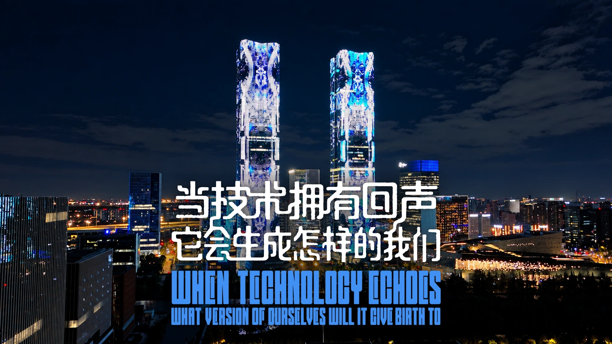
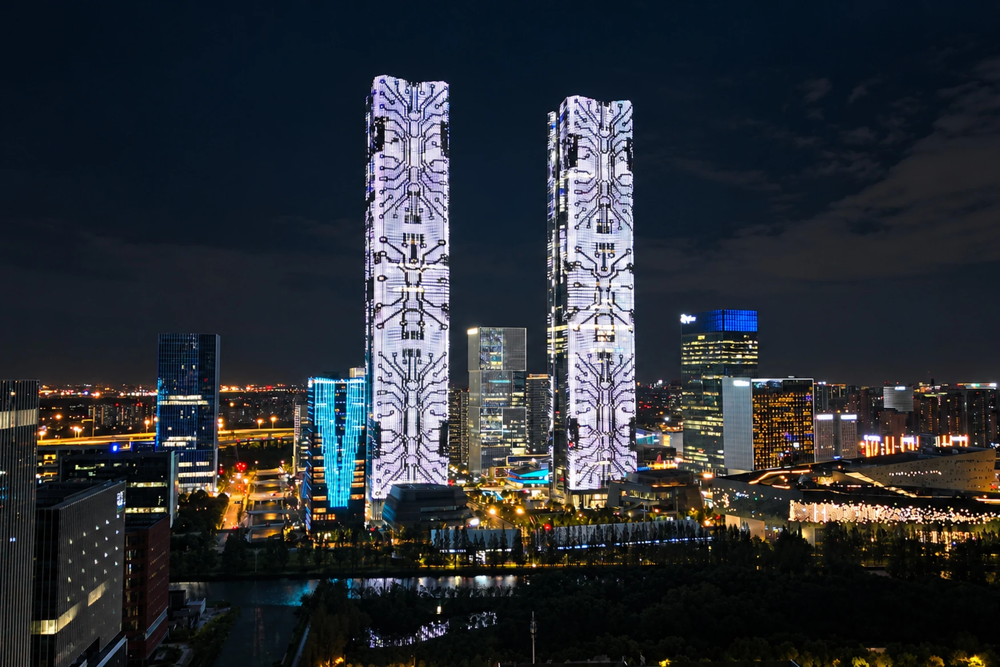
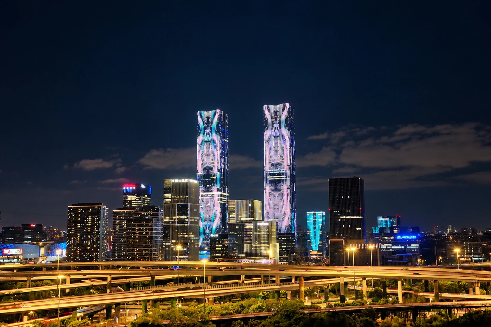
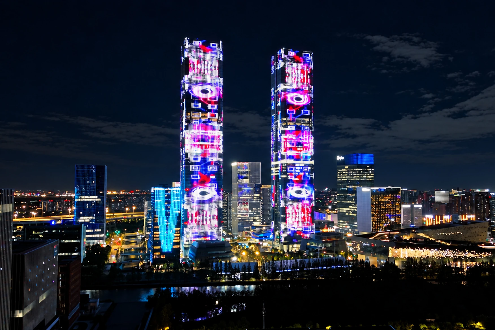
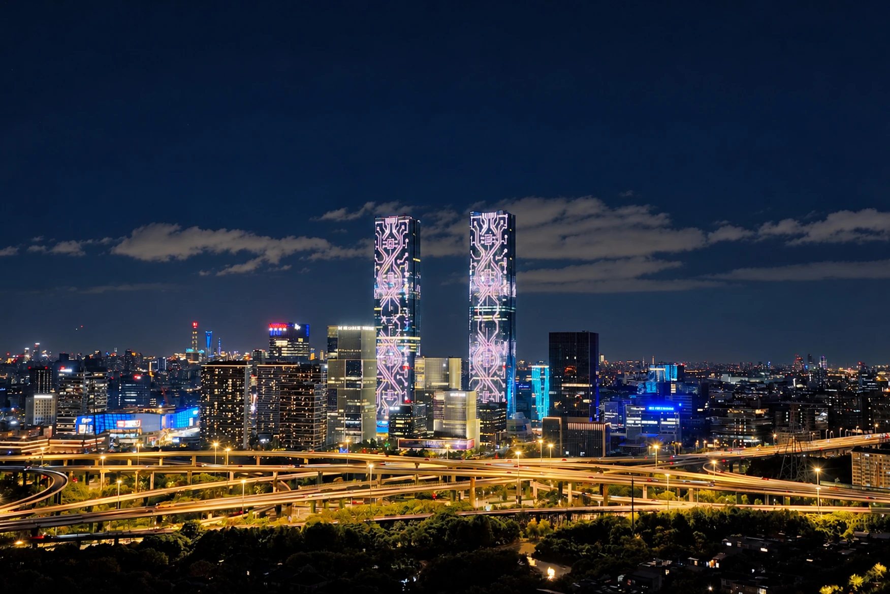
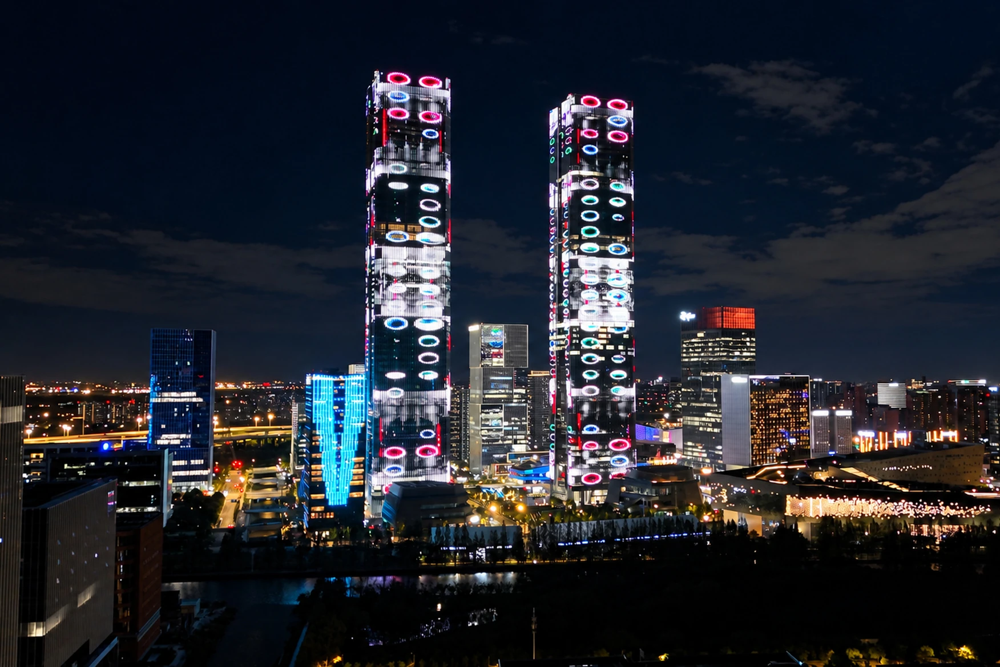
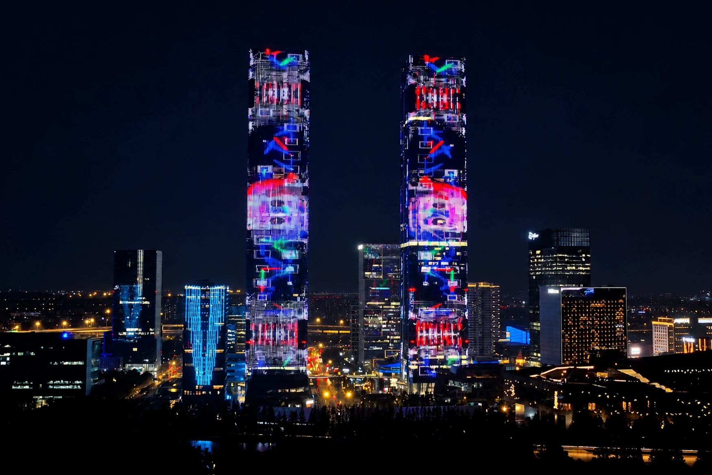
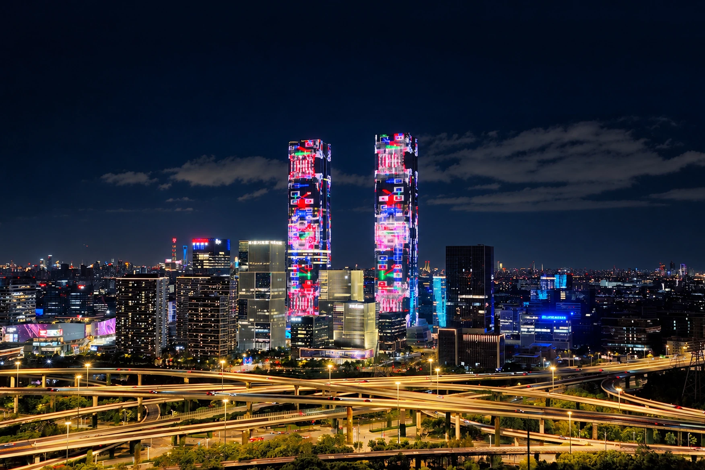
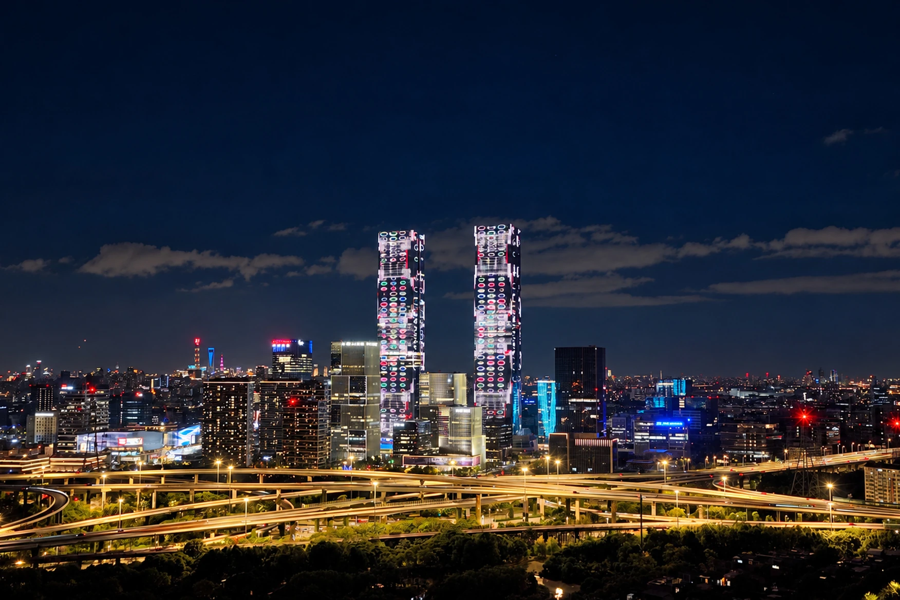

When Technology Echoes, What Version of Ourselves Will It Give Birth To?
当技术拥有回声，它会生成怎样的我们？
科学之门双塔上的一张神经网络——人与 AI 在彼此的回声里，相互修正。
人类创造了 AI，并在日常中不断使用它；而当 AI 的回应愈发精准，它也开始反过来塑造人的行为方式。作品由此发问：当技术拥有回声，它会生成怎样的我们？
作品以神经网络为隐喻。在神经网络中，没有任何一个节点掌握答案，节点之间只是彼此传递信号，并依据回传的结果不断修正自身。人与 AI 之间同样构成这样一张网络——双方在彼此的回应中相互修正。作品将这两张网络同构，转译为在科学之门双塔幕墙上展开的影像。
作品分为“符码”“联结”“回声”三个章节。它们并非一一对应的图解，更像一首乐曲的三个乐章：从零星的信号，到密集的往返，再到逐渐回落的回声，让人与 AI 之间不可见的关系获得可见的形态。
创作中，作品没有预设最终画面，而是让 AI 理解科学之门这一载体与作品的观念，再与它共同编写程序、反复预演。作品因此不再是一段完成的影片，而是一套为科学之门建立、能够持续生成与演化的视觉系统。
A neural network across the twin towers of the Gate of Science: humans and AI correcting each other in each other's echoes.
Humans created AI and use it every day; yet as its responses grow ever more precise, AI has begun to reshape human behaviour in return. The work asks: when technology echoes, what version of ourselves will it give birth to?
The work takes the neural network as its metaphor. In a neural network, no single node holds the answer; nodes simply pass signals to one another and correct themselves according to what comes back. Humans and AI form a similar network, each correcting the other through mutual response. The work maps these two networks onto each other and translates them into moving images that unfold across the twin-tower façade of the Gate of Science.
It is structured in three chapters: Glyph, Link and Echo. Rather than literal illustrations, they behave like three movements of a piece of music, from scattered signals, to dense exchange, to a slowly receding echo, giving visible form to the invisible relationship between humans and AI.
No final image was fixed in advance. Instead, AI was asked to understand the Gate of Science as a medium and the idea behind the work, and the program was then written and rehearsed together with it. The result is not a finished film but a visual system built for the Gate of Science, one that keeps generating and evolving.








